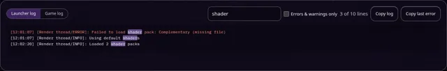
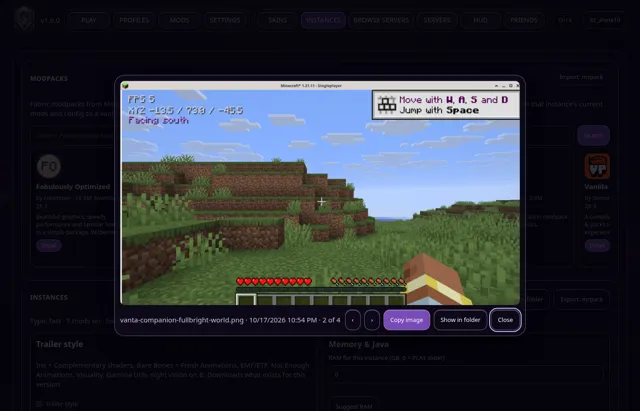

News · · v1.6.1
Vanta 1.6.1: server favourites, a logs viewer and shader previews
Star your favourite servers, search the game log, flip through screenshots full size, and see shader and resource pack previews before you install.
Vanta 1.6.1 is a quality-of-life update. Press Update in Vanta's top bar to get it; your accounts, worlds and mods are not touched.
Server favourites
Tap ☆ on any server in BROWSE SERVERS. Favourites come first, there and on the PLAY bar. You can sort by players, ping or name. Vanta remembers the last player count and ping it saw, and says when it last checked, so the list is useful even when a server doesn't answer.

Shader and resource pack previews
Shader and resource pack cards in MODS now show a preview picture from Modrinth, so you can see the look before installing.

Logs viewer
Search the launcher or game log as you type, show only errors and warnings, and see how many lines match. Copy log copies just the matching lines when a filter is on, which is handy when asking for help.

Screenshot viewer
Click a screenshot in INSTANCES to open it full size. Use the arrow keys to go through them, copy the image with Ctrl+C, or show it in Explorer or Finder.

What's new popup
After an update, Vanta shows a short list of what changed, once.